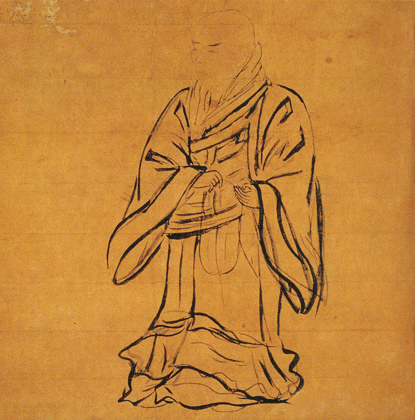
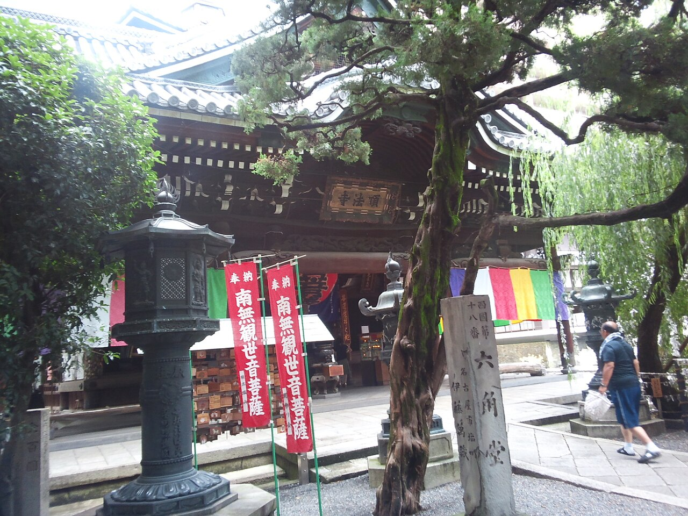
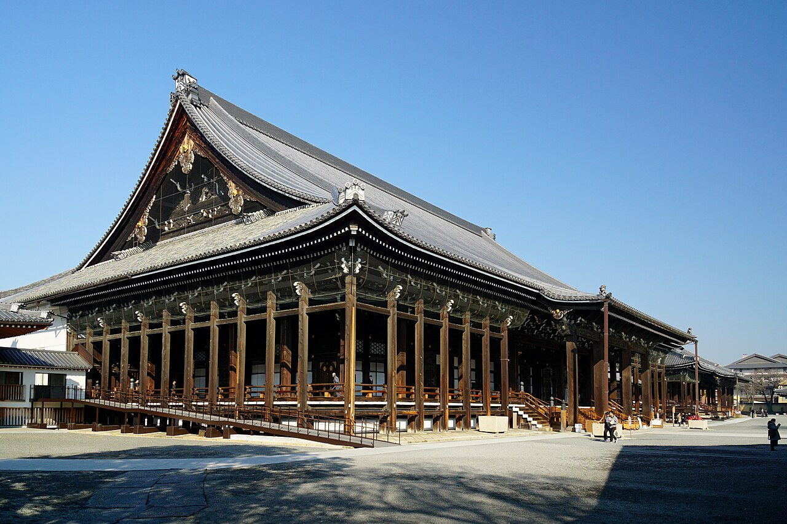

신란의 가르침
아미타불의 본원 속에 살다 ― 정토진종(조도신슈)의 종조, 그 생애와 말씀
히에이산 ― 사진: Benlisquare (CC BY-SA 4.0)
{kind=link}
소개
신란은 누구인가

신란(親鸞, 1173–1263)은 일본 가마쿠라 시대의 승려로, 정토진종(浄土真宗, 조도신슈)의 종조로 추앙받는 인물입니다. 아홉 살에 출가하여 당대 최대의 수행 도량이었던 히에이산에서 이십 년에 걸친 엄격한 수행에 힘썼으나, 자신의 힘으로 깨달음에 이르는 길이 막다른 곳에 다다랐음을 느끼고 스물아홉 살에 산을 내려왔습니다.
결정적인 만남은 스승 호넨(法然)과의 만남이었습니다. 그를 통해 신란은 오직 염불하여 아미타불의 본원에 의해 구원받는다는 전수염불(専修念仏)의 가르침에 귀의합니다. 이 가르침 때문에 겪은 유배라는 박해조차도 일본 동부의 민중에게 염불을 전하는 인연이 되었고, 아흔 해의 생애를 통해 범부(凡夫)가 있는 그대로 구원받는 길을 밝혔습니다.
승려이면서도 공공연히 아내를 맞아 가정을 이루고 스스로를 "승려도 아니고 속인도 아니다"라고 칭한 그의 삶의 방식은, 부처의 구원이 특별한 수행자만의 것이 아니라 일상을 살아가는 모든 사람에게 열려 있음을 몸소 보여 주는 것이었습니다.
가르침
가르침의 핵심
신란의 가르침은 "자신의 힘으로는 어찌할 수 없는 나"가 아미타불의 크나큰 본원의 작용에 의해 구원받아 가는 길입니다.
타력본원
TARIKI HONGAN 他力本願
"타력"이란 다른 사람에게 기대는 것이 아니라 아미타불의 본원의 작용을 뜻합니다. 나 자신의 헤아림이나 노력이 아니라, 부처 쪽에서 나에게 향해 오는 서원의 힘에 의해 구원받는다는, 가르침의 근간입니다.
악인정기
AKUNIN SHOKI 悪人正機
자신의 힘으로 선을 행할 수 없는 "악인"이야말로 아미타불 구원의 참된 대상(정기)이라는 가르침입니다. 자신의 한계와 죄 깊음을 자각한 사람에게야말로 본원은 가장 먼저 작용한다고 설합니다.
염불
NENBUTSU 念仏
"나무아미타불"을 부르는 염불은 구원받기 위한 조건이나 수행이 아닙니다. 신란은 이를 이미 나를 구원하고자 작용하고 계시는 부처를 향한 보은과 감사의 자연스러운 표현으로 받아들였습니다.
비승비속
HISO HIZOKU 非僧非俗
유배로 승적을 박탈당한 신란은 "승려도 아니고 속인도 아니다"라고 선언하며 구토쿠(愚禿, "어리석은 까까머리") 신란이라 자칭했습니다. 고기를 먹고 아내를 두는 재가 생활 그대로 염불에 사는 그 모습이야말로 만인에게 열린 불도의 증거였습니다.
말씀
그의 말씀
제자 유이엔(唯円)이 엮은 것으로 전해지는 『탄이초(歎異抄)』에는 신란의 생생한 육성을 전하는 말씀이 많이 남아 있습니다.
선인도 왕생을 이루거늘, 하물며 악인이랴.― 『탄이초』 제3조
선인조차 왕생할 수 있으니 악인은 더 말할 것도 없다 ― 상식을 뒤집는 이 말씀에는, 아직 자신의 선함에 기대는 사람보다 부처께 매달릴 수밖에 없는 사람이야말로 본원의 참된 대상이라는 악인정기의 가르침이 응축되어 있습니다.
나 신란은 제자를 단 한 사람도 두지 않았다.― 『탄이초』 제6조
염불하는 사람들은 모두 아미타불의 이끄심에 의한 것이지 "나의" 제자가 아니다 ― 함께 본원 속에 살아가는 길벗으로서 사람들과 대등하게 걸어간 신란의 자세를 전하는 말씀입니다.
오직 염불만이 참되고 진실하다.― 『탄이초』 후서
번뇌로 가득한 이 세상에서 헛되고 거짓되지 않은 단 하나의 진실은 염불이다 ― 인간 삶의 불확실함을, 그리고 자기 자신의 마음을 끝까지 응시한 신란의 깊은 자기 성찰에서 나온 말씀입니다.
생애
생애
{kind=link}

{kind=link}

{kind=link}
교토 근교의 히노에서 하급 귀족 히노 아리노리의 아들로 태어나다.
쇼렌인에서 출가 득도. 이후 히에이산에서 약 20년간 수행에 힘쓰다.
히에이산을 내려와 롯카쿠도에서 백일 기도를 올린 뒤, 호넨의 문하에 들어가 전수염불에 귀의하다.
염불 탄압(조겐의 법난)으로 에치고(지금의 니가타현)에 유배되다. 승적을 박탈당하고 "비승비속"의 입장에 서다.
사면된 뒤 간토 지방(히타치국 등)으로 옮겨, 약 20년에 걸쳐 농민을 비롯한 많은 사람들에게 염불의 가르침을 전하다.
주저 『교행신증』의 초고를 짓다. 정토진종에서는 이 해를 입교개종의 해로 삼는다.
교토로 돌아와 저술에 전념하다. 『교행신증』의 완성과 화찬 제작 등 만년까지 붓을 놓지 않다.
동생 진우의 거처(젠보보)에서 평생의 소원이던 정토 왕생을 이루다.
저서
주요 저서
교행신증 教行信証
신란의 주저. 정식 명칭은 『현정토진실교행증문류』. 경전과 논서의 인용을 통해 정토진종 가르침의 체계를 밝힌 근본 성전입니다.
삼첩화찬 三帖和讃
『정토화찬』 『고승화찬』 『정상말화찬』을 아울러 부르는 이름. 부처의 덕과 정토 칠고승의 가르침을 사람들이 함께 부르기 쉬운 일본어 노래로 찬탄한 것입니다.
정신게 正信偈
『교행신증』 행권 말미의 게송 「정신염불게」. 아미타불의 본원과 칠고승의 전통을 찬탄하는 게송으로, 오늘날에도 아침저녁 근행에서 널리 독송되고 있습니다.
탄이초 歎異抄
신란 입적 후 제자 유이엔이 엮은 것으로 전해지는 어록. 신란의 말씀을 생생하게 전하며, 시대를 넘어 수많은 사람들의 마음을 사로잡아 온 일본 불교의 명저입니다.
후원
사이트 후원 안내
이 사이트는 신란의 가르침을 다섯 개 언어로 소개하기 위해 개인이 운영하는 비영리 페이지입니다. 사이트의 유지와 발전을 Ko-fi를 통해 응원해 주시면 큰 힘이 됩니다.
☕ Ko-fi로 후원하기보내 주신 후원은 사이트 운영을 위해 소중히 사용하겠습니다.
문의
문의하기
가르침에 대한 질문, 감상, 사이트에 대한 의견 등을 부담 없이 보내 주세요.